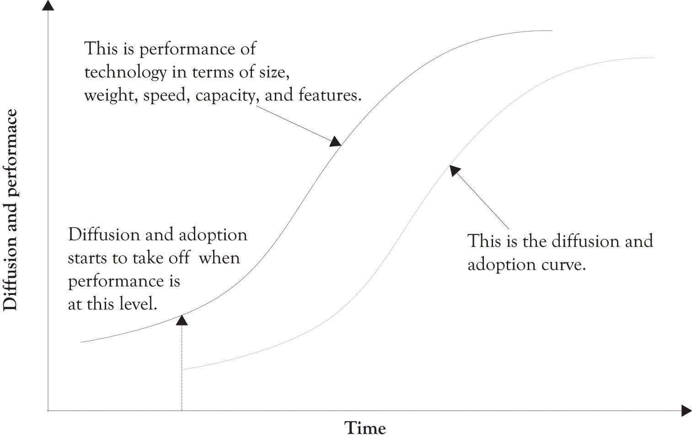

There are a number of factors that influence the diffusion of products and technology. These factors include whether the technology solves an important problem, how well the public or target market understands the technology, the value versus cost calculation made by consumers, how well the product or technology has been marketed, the effectiveness of the social network in communicating the benefits of the technology, the effectiveness of the supply chain in delivering quality products in a timely manner, and finally, how well the technology performs. Performance is the most important factor influencing diffusion, but it can be trumped by any of these factors. There were nearly a quarter of a million patents granted by the U.S. Patent Office in 2010. There have been nearly 5.2 million patents granted since 1963.Patent Technology Monitoring Team (n.d.). The point is that technology development never stops.
The diffusion and subsequent awareness of a product usually lags increases in product performance (see Figure 1.3 "Diffusion Lags Performance"). This is in part related to Moore’s law. The essence of Moore’s law is that the performance of products increases over time, whereas the cost of the product stays the same or decreases. This increase in performance is a function of technological developments and, of course, the learning curve. The idea behind the learning curveA curve, plotting performance against practice. is that a company or an individual gets better at doing something the more they do it. Moore originally stated the idea in the context of computer-processing power (see Figure 1.3 "Diffusion Lags Performance").
Figure 1.3 Diffusion Lags Performance
Moore is widely known for “Moore’s Law,” in which he predicted that the number of components the industry would be able to place on a computer chip would double every year. In 1975, he updated his prediction to once every 2 years. It has become the guiding principle for the semiconductor industry to deliver ever-more-powerful chips while decreasing the cost of electronics.Moore (n.d.).
Over time, individual firms and the industry become more efficient and the products have better features. The net result is that product performance increases, production capabilities increase, and the cost of production decreases. Increases in product performance are coupled with improvements in manufacturing efficiency and attract more customers. Research and development (R&D) and learning curve effects drive all this.Spence (1981). One of the most important outcomes of the learning curve is that it provides short-term cost advantages to those firms that achieve large market share and additionally creates barriers to market entry. The essence of Moore’s law is that organizations learn by doing. They begin to break down tasks, tasks become specialized, and some tasks are automated. These organizations also begin to develop complementary competencies that are the foundation for new innovations and products.